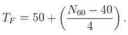
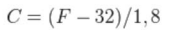
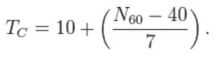

Utilizando la ley de Dolbear ingresar los chirridos por minuto de un grillo y calcular la temperatura actual.

El resultado obtenido estará en Fahrenheit por lo que una vez obtenido el resultado se deberá mostrar pero además convertir a grados Celsius para también mostrarlo.

También se puede hacer el cálculo directamente en celsius

N60 es el número de chirridos por minuto. Se sugiere hacer el cálculo en Fahrenheit y convertirlo a Celsius para luego hacer el cálculo directamente en Celsius y ver si coinciden.
La coincidencia no será exacta, pero sí debe ser muy cercana.
Resultado en Fahrenheit: 0
De Fahrenheit a Celsius: 0
Resultado en Celsius: 0